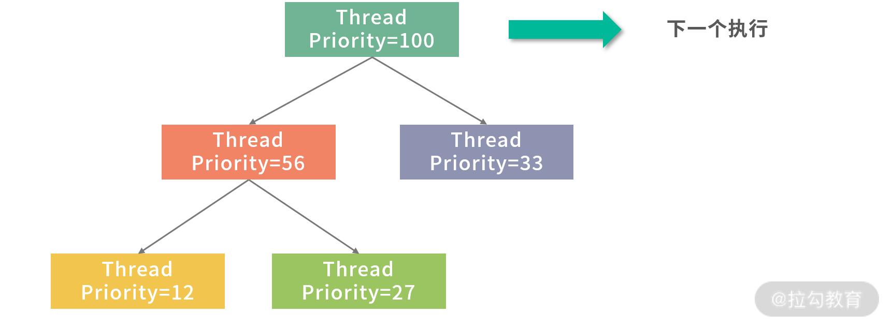
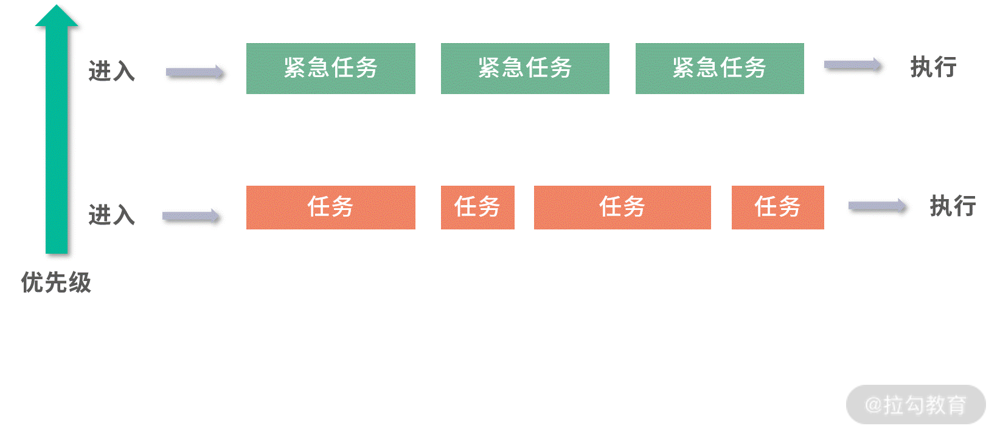
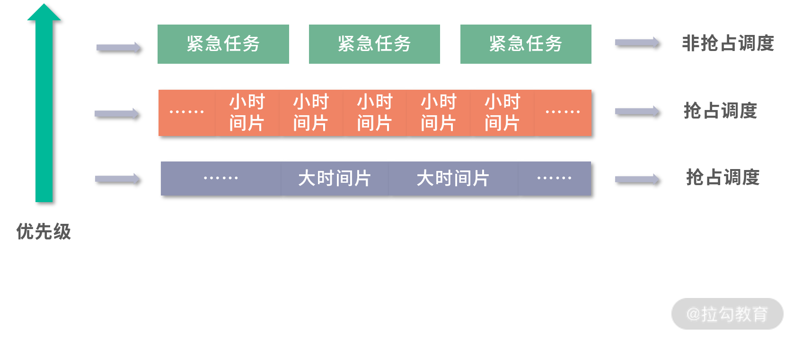

- 00 开篇词 为什么大厂面试必考操作系统？.md.html
- 00 课前必读 构建知识体系，可以这样做！.md.html
- 01 计算机是什么：“如何把程序写好”这个问题是可计算的吗？.md.html
- 02 程序的执行：相比 32 位，64 位的优势是什么？（上）.md.html
- 03 程序的执行：相比 32 位，64 位的优势是什么？（下）.md.html
- 04 构造复杂的程序：将一个递归函数转成非递归函数的通用方法.md.html
- 05 存储器分级：L1 Cache 比内存和 SSD 快多少倍？.md.html
- 05 (1) 加餐 练习题详解（一）.md.html
- 06 目录结构和文件管理指令：rm -rf 指令的作用是？.md.html
- 07 进程、重定向和管道指令：xargs 指令的作用是？.md.html
- 08 用户和权限管理指令： 请简述 Linux 权限划分的原则？.md.html
- 09 Linux 中的网络指令：如何查看一个域名有哪些 NS 记录？.md.html
- 10 软件的安装： 编译安装和包管理器安装有什么优势和劣势？.md.html
- 11 高级技巧之日志分析：利用 Linux 指令分析 Web 日志.md.html
- 12 高级技巧之集群部署：利用 Linux 指令同时在多台机器部署程序.md.html
- 12 (1)加餐 练习题详解（二）.md.html
- 13 操作系统内核：Linux 内核和 Windows 内核有什么区别？.md.html
- 14 用户态和内核态：用户态线程和内核态线程有什么区别？.md.html
- 15 中断和中断向量：Javajs 等语言为什么可以捕获到键盘输入？.md.html
- 16 WinMacUnixLinux 的区别和联系：为什么 Debian 漏洞排名第一还这么多人用？.md.html
- 16 (1)加餐 练习题详解（三）.md.html
- 17 进程和线程：进程的开销比线程大在了哪里？.md.html
- 18 锁、信号量和分布式锁：如何控制同一时间只有 2 个线程运行？.md.html
- 19 乐观锁、区块链：除了上锁还有哪些并发控制方法？.md.html
- 20 线程的调度：线程调度都有哪些方法？.md.html
- 21 哲学家就餐问题：什么情况下会触发饥饿和死锁？.md.html
- 22 进程间通信： 进程间通信都有哪些方法？.md.html
- 23 分析服务的特性：我的服务应该开多少个进程、多少个线程？.md.html
- 23 (1)加餐 练习题详解（四）.md.html
- 24 虚拟内存 ：一个程序最多能使用多少内存？.md.html
- 25 内存管理单元： 什么情况下使用大内存分页？.md.html
- 26 缓存置换算法： LRU 用什么数据结构实现更合理？.md.html
- 27 内存回收上篇：如何解决内存的循环引用问题？.md.html
- 28 内存回收下篇：三色标记-清除算法是怎么回事？.md.html
- 28 (1)加餐 练习题详解（五）.md.html
- 29 Linux 下的各个目录有什么作用？.md.html
- 30 文件系统的底层实现：FAT、NTFS 和 Ext3 有什么区别？.md.html
- 31 数据库文件系统实例：MySQL 中 B 树和 B+ 树有什么区别？.md.html
- 32 HDFS 介绍：分布式文件系统是怎么回事？.md.html
- 32 (1)加餐 练习题详解（六）.md.html
- 33 互联网协议群（TCPIP）：多路复用是怎么回事？.md.html
- 34 UDP 协议：UDP 和 TCP 相比快在哪里？.md.html
- 35 Linux 的 IO 模式：selectpollepoll 有什么区别？.md.html
- 36 公私钥体系和网络安全：什么是中间人攻击？.md.html
- 36 (1)加餐 练习题详解（七）.md.html
- 37 虚拟化技术介绍：VMware 和 Docker 的区别？.md.html
- 38 容器编排技术：如何利用 K8s 和 Docker Swarm 管理微服务？.md.html
- 39 Linux 架构优秀在哪里.md.html
- 40 商业操作系统：电商操作系统是不是一个噱头？.md.html
- 40 (1)加餐 练习题详解（八）.md.html
- 41 结束语 论程序员的发展——信仰、选择和博弈.md.html
20 线程的调度：线程调度都有哪些方法？
这一讲我带来的面试题目是：线程调度都有哪些方法？
所谓调度，是一个制定计划的过程，放在线程调度背景下，就是操作系统如何决定未来执行哪些线程？
这类型的题目考察的并不是一个死的概念，面试官会通过你的回答考量你对知识进行加工和理解的能力。这有点类似于设计技术方案，要对知识进行系统化、结构化地思考和分类。就这道题目而言，可以抓两条主线，第一条是形形色色调度场景怎么来的？第二条是每个调度算法是如何工作的？
先到先服务
早期的操作系统是一个个处理作业（Job），比如很多保险业务，每处理一个称为一个作业（Job）。处理作业最容易想到的就是先到先服务（First Come First Service，FCFS），也就是先到的作业先被计算，后到的作业，排队进行。
这里需要用到一个叫作队列的数据结构，具有先入先出（First In First Out，FIFO）性质。先进入队列的作业，先处理，因此从公平性来说，这个算法非常朴素。另外，一个作业完全完成才会进入下一个作业，作业之间不会发生切换，从吞吐量上说，是最优的——因为没有额外开销。
但是这样对于等待作业的用户来说，是有问题的。比如一笔需要用时 1 天的作业 ，如果等待了 10 分钟，用户是可以接受的；一个用时 10 分钟的作业，用户等待一天就要投诉了。 因此如果用时 1 天的作业先到，用时 10 分钟的任务后到，应该优先处理用时少的，也就是短作业优先（Shortest Job First，SJF）。
短作业优先
通常会同时考虑到来顺序和作业预估时间的长短，比如下面的到来顺序和预估时间：
这样就会优先考虑第一个到来预估时间为 3 分钟的任务。 我们还可以从另外一个角度来审视短作业优先的优势，就是平均等待时间。
平均等待时间 = 总等待时间/任务数
上面例子中，如果按照 3,3,10 的顺序处理，平均等待时间是：(0 + 3 + 6) / 3 = 3 分钟。 如果按照 10,3,3 的顺序来处理，就是( 0+10+13 )/ 3 = 7.66 分钟。
平均等待时间和用户满意度是成反比的，等待时间越长，用户越不满意，因此在大多数情况下，应该优先处理用时少的，从而降低平均等待时长。
采用 FCFS 和 SJF 后，还有一些问题没有解决。
- 紧急任务如何插队？比如老板安排的任务。
- 等待太久的任务如何插队？比如用户等太久可能会投诉。
- 先执行的大任务导致后面来的小任务没有执行如何处理？比如先处理了一个 1 天才能完成的任务，工作半天后才发现预估时间 1 分钟的任务也到来了。
为了解决上面的问题，我们设计了两种方案， 一种是优先级队列（PriorityQueue），另一种是抢占（Preemption）。
优先级队列（PriorityQueue）
刚才提到老板安排的任务需要紧急插队，那么下一个作业是不是应该安排给老板？毫无疑问肯定是这样！那么如何控制这种优先级顺序呢？一种方法是用优先级队列。优先级队列可以给队列中每个元素一个优先级，优先级越高的任务就会被先执行。
优先级队列的一种实现方法就是用到了堆（Heap）这种数据结构，更最简单的实现方法，就是每次扫描一遍整个队列找到优先级最高的任务。也就是说，堆（Heap）可以帮助你在 O(1) 的时间复杂度内查找到最大优先级的元素。
比如老板的任务，就给一个更高的优先级。 而对于普通任务，可以在等待时间（W） 和预估执行时间（P） 中，找一个数学关系来描述。比如：优先级 = W/P。W 越大，或者 P 越小，就越排在前面。 当然还可以有很多其他的数学方法，利用对数计算，或者某种特别的分段函数。
这样，关于紧急任务如何插队？等待太久的任务如何插队？这两个问题我们都解决了，接下来我们来看先执行的大任务导致后面来的小任务没有执行的情况如何处理？
抢占
为了解决这个问题，我们需要用到抢占（Preemption）。
抢占就是把执行能力分时，分成时间片段。 让每个任务都执行一个时间片段。如果在时间片段内，任务完成，那么就调度下一个任务。如果任务没有执行完成，则中断任务，让任务重新排队，调度下一个任务。
拥有了抢占的能力，再结合之前我们提到的优先级队列能力，这就构成了一个基本的线程调度模型。线程相对于操作系统是排队到来的，操作系统为每个到来的线程分配一个优先级，然后把它们放入一个优先级队列中，优先级最高的线程下一个执行。

每个线程执行一个时间片段，然后每次执行完一个线程就执行一段调度程序。
图中用红色代表调度程序，其他颜色代表被调度线程的时间片段。调度程序可以考虑实现为一个单线程模型，这样不需要考虑竞争条件。
上面这个模型已经是一个非常优秀的方案了，但是还有一些问题可以进一步处理得更好。
- 如果一个线程优先级非常高，其实没必要再抢占，因为无论如何调度，下一个时间片段还是给它。那么这种情况如何实现？
- 如果希望实现最短作业优先的抢占，就必须知道每个线程的执行时间，而这个时间是不可预估的，那么这种情况又应该如何处理？
为了解决上面两个问题，我们可以考虑引入多级队列模型。
多级队列模型
多级队列，就是多个队列执行调度。 我们先考虑最简单的两级模型，如图：

上图中设计了两个优先级不同的队列，从下到上优先级上升，上层队列调度紧急任务，下层队列调度普通任务。只要上层队列有任务，下层队列就会让出执行权限。
- 低优先级队列可以考虑抢占 + 优先级队列的方式实现，这样每次执行一个时间片段就可以判断一下高优先级的队列中是否有任务。
- 高优先级队列可以考虑用非抢占（每个任务执行完才执行下一个）+ 优先级队列实现，这样紧急任务优先级有个区分。如果遇到十万火急的情况，就可以优先处理这个任务。
上面这个模型虽然解决了任务间的优先级问题，但是还是没有解决短任务先行的问题。可以考虑再增加一些队列，让级别更多。比如下图这个模型：

紧急任务仍然走高优队列，非抢占执行。普通任务先放到优先级仅次于高优任务的队列中，并且只分配很小的时间片；如果没有执行完成，说明任务不是很短，就将任务下调一层。下面一层，最低优先级的队列中时间片很大，长任务就有更大的时间片可以用。通过这种方式，短任务会在更高优先级的队列中执行完成，长任务优先级会下调，也就类似实现了最短作业优先的问题。
实际操作中，可以有 n 层，一层层把大任务筛选出来。 最长的任务，放到最闲的时间去执行。要知道，大部分时间 CPU 不是满负荷的。
总结
那么通过这一讲的学习，你现在可以尝试来回答本节关联的面试题目：线程调度都有哪些方法？
【解析】 回答这个问题你要把握主线，千万不要教科书般的回答：任务调度分成抢占和非抢占的，抢占的可以轮流执行，也可以用优先级队列执行；非抢占可以先到先服务，也可以最短任务优先。
上面这种回答可以用来过普通的程序员岗位，但是面试官其实更希望听到你的见解，这是初中级开发人员与高级开发人员之间的差异。
比如你告诉面试官：非抢占的先到先服务的模型是最朴素的，公平性和吞吐量可以保证。但是因为希望减少用户的平均等待时间，操作系统往往需要实现抢占。操作系统实现抢占，仍然希望有优先级，希望有最短任务优先。
但是这里有个困难，操作系统无法预判每个任务的预估执行时间，就需要使用分级队列。最高优先级的任务可以考虑非抢占的优先级队列。 其他任务放到分级队列模型中执行，从最高优先级时间片段最小向最低优先级时间片段最大逐渐沉淀。这样就同时保证了小任务先行和高优任务最先执行。
以上的回答，并不是一种简单的概括，还包含了你对问题的理解和认知。在面试时，正确性并不是唯一的考量指标，面试官更看重候选人的思维能力。这也是为什么很多人面试问题都答上来了，仍然没有拿到 offer 的原因。如果面试目标是正确性，为什么不让你开卷考试呢？ 上维基百科看不是更正确吗？